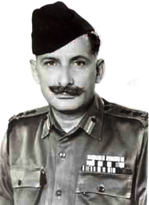
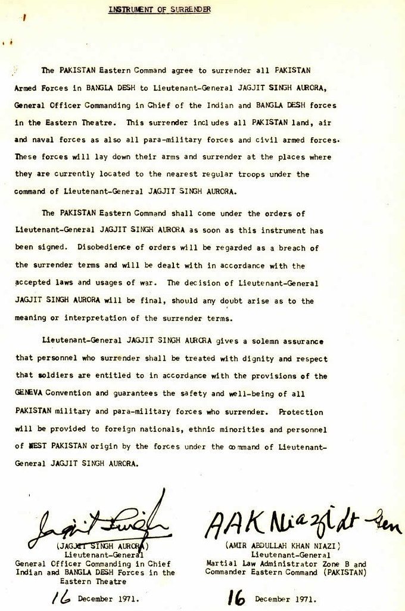

Heroes · Leadership
Field Marshal Sam Manekshaw: The Soldier's Soldier

Great armies are forged by great leaders, and few leaders in any nation's history are as beloved as Field Marshal Sam Manekshaw — "Sam Bahadur," Sam the Brave — the first soldier to hold India's highest military rank, and the architect of its most complete victory.
My book honours the soldier in the trench; this article honours the kind of leader who earns that soldier's absolute trust.
A career forged in fire
Sam Hormusji Framji Jamshedji Manekshaw was commissioned into the British Indian Army in 1934. In the Second World War, fighting the Japanese in Burma, he was gravely wounded by machine-gun fire and awarded the Military Cross on the battlefield — the story goes that it was pinned on him because a posthumous award was expected.[1]
He survived, and over the following decades rose through the army with a reputation for fearlessness, sharp wit, and an absolute refusal to flatter his political masters.
Their courage you've sown, the values you gave, shape the man who stands unafraid.
The architect of 1971

As Chief of the Army Staff in 1971, Manekshaw was asked by the Prime Minister to move against East Pakistan in the spring. He refused to be rushed — insisting that the army would be ready only after the monsoon, with proper preparation — and offered to resign if overruled.[1] His judgement was trusted.
When the war came in December, the result was decisive: the liberation of Bangladesh and the surrender of around 93,000 troops in just thirteen days. In 1973, he was made India's first Field Marshal.[1]
Why soldiers loved him
Manekshaw's legend rests on more than victories. It rests on the way he cared for his soldiers, his legendary one-liners, and his unbending integrity. He believed a leader's job was to take responsibility and to tell the truth — to the troops below and the politicians above alike.
In an age of noise, his example is a quiet lesson in what leadership actually costs: competence, courage, and the willingness to say "no" to power when the lives of your soldiers depend on it. The men in my poems follow orders into the gale. Sam Bahadur is the kind of man worth following.
Sources & further reading
All images via Wikimedia Commons, used under the licences shown in each caption.